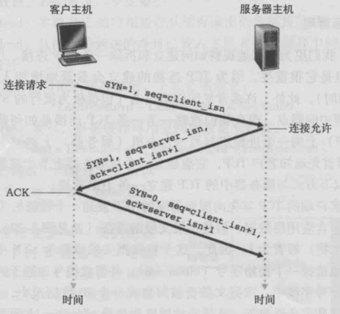
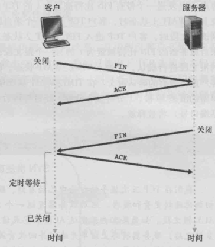

TCP 连接建立的过程
三次握手

- 客户端向服务端发送报文，将 SYN 标志位置 1，客户端随机产生一个初始序列号 client_isn 。
- 服务器收到来自客户端的 SYN 报文，会为该 TCP 连接分配缓存和变量。服务器向客户端发送确认报文，SYN 标志位置 1，随机生成服务器的初始序列号 server_isn ，将首部确认号字段设置为 client_isn + 1。
- 收到服务器的 SYNACK 报文后，客户端为该连接分配缓存和变量。客户端向主机发送另一个报文，确认号设置为 server_isn + 1，SYN 设置为 0，序号设置为 client_isn + 1。这个报文可以携带数据。
为什么需要三次握手？
- 第一次报文发送，服务端如果收到了客户端的报文，此时，服务端知道客户端到服务端的连接是可用的。
- 第二次报文发送，如果客户端收到了服务端的报文，此时，客户端知道了客户端到服务端和服务端到客户端的连接时可用的。
- 第三次报文发送，如果服务端收到了连接，此时，服务端就知道服务端到客户端的连接也是可用的。客户端和服务端就都能够确认这个链路双向都是可用的。
为什么客户端和服务端的初始序列号必须随机生成？
假设有三个角色 A 代表服务器，B 代表客户端，C 代表攻击者。如果以 B 的身份伪造一个请求发送给 A，A 会给 B 发送一个 SYNACK 报文，假设此时 B 被 C 搞得处于异常状态。如果这个 SYNACK 报文中的 server_isn 是固定的，那么 C 就很容易猜测出这个 server_isn，然后构造确认号发送报文给 A。
四次挥手

参与一条 TCP 连接的两个进程中任何一个都能终止该连接。当某客户打算关闭连接：
- 客户应用进程给服务器发送一个报文，将 FIN 标志位置 1。
- 服务器会送一个确认报文，ACK 标志位置 1。
- 服务器发送它的终止报文，FIN 标志位置 1。
- 客户端对服务器的终止报文进行确认，ACK 置 1。